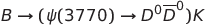

Psi-Decays
This code represents the work of my summer internship in 2013. The purpose of this code is two-part:
-
Investigate the invariant mass distributions of the product particles of three decays:


-
Investigate the decay angles between product pairs in the following two decays:

- 
These results demonstrate that the decay angle of the decays is sufficiently sharply peaked to be used as a discriminator from the background.
It can therefore be used to distinguish the
decays for use in symmetry violation studies such as those measuring the strong
phase information of the decay.